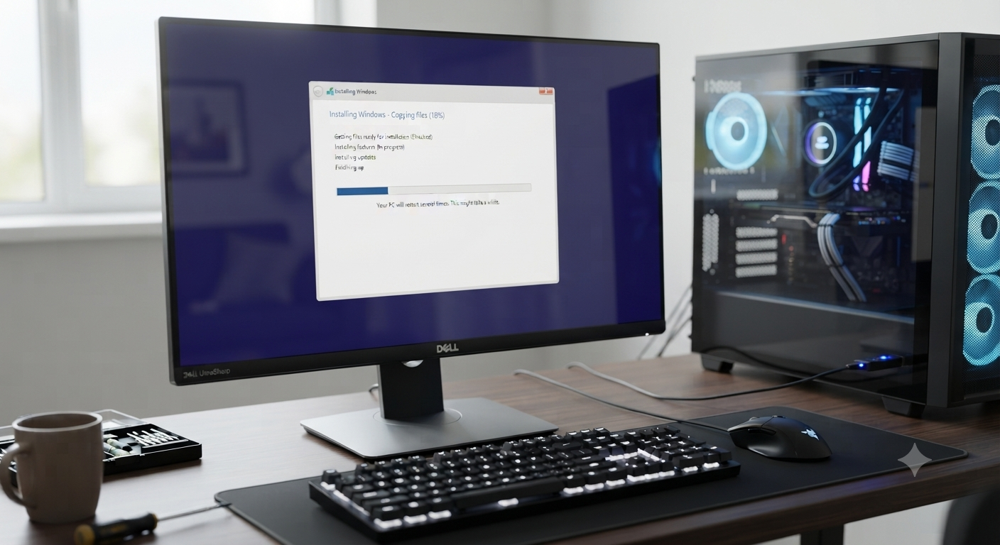
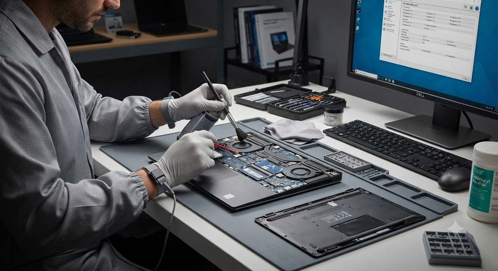
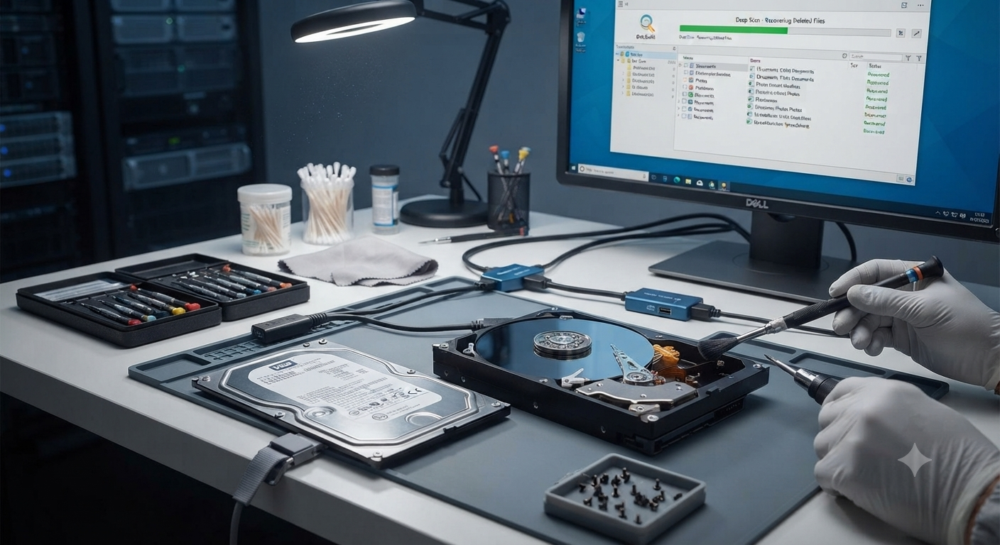
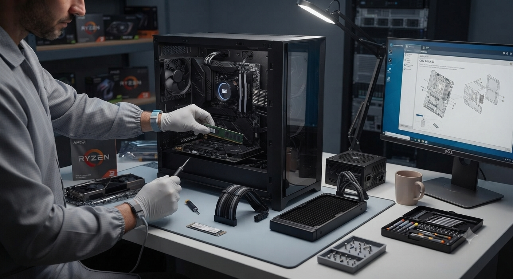
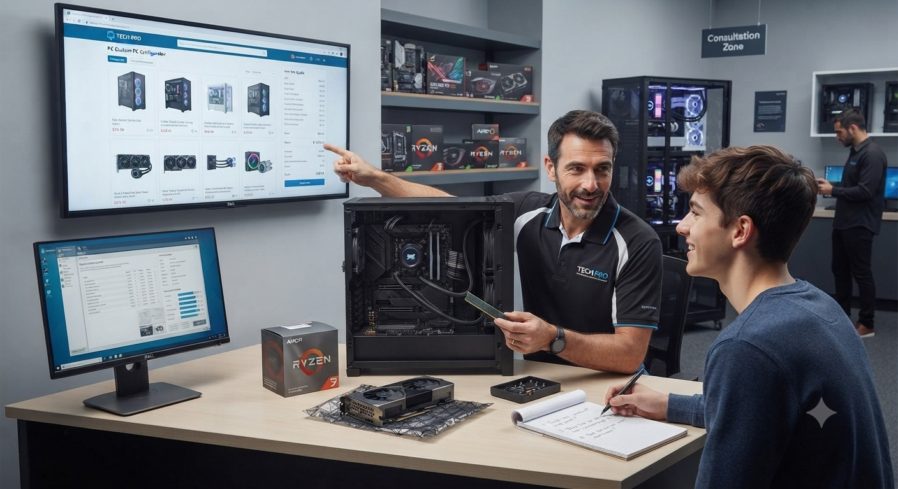
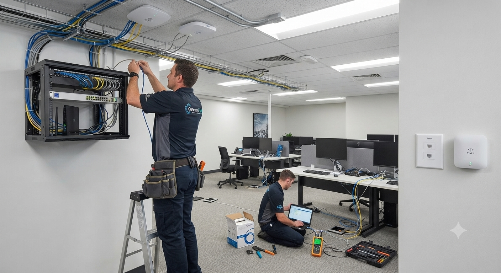

Soluciones Tecnológicas y Soporte Profesional
Especialistas en informática, optimización de equipos, recursos educativos y venta de tecnología.
🛠️ Soporte Técnico
Mantenimiento correctivo y preventivo, optimización de PC y soluciones efectivas para tus equipos.
🛒 Catálogo y Ventas
Venta de componentes, software, carga de música en memorias y juegos digitales listos para disfrutar.
📚 Recursos y Cursos
Material de apoyo académico, guías de computación y herramientas clave para estudiantes y entusiastas.
Servicios Especializados de Soporte Técnico
Soluciones profesionales y garantizadas con tarifas claras para cada necesidad.

Instalación de Sistema
Instalación limpia de sistema operativo, paquetería de programas esenciales, controladores (drivers) y optimización inicial.

Mantenimiento
Limpieza física profunda de componentes internos, cambio de pasta térmica, revisión de temperatura y diagnóstico de hardware.

Rescate de Información
Recuperación de archivos borrados, datos de discos dañados o unidades con fallas lógicas de manera segura.

Armado de Equipos
Ensamblaje profesional de PC de escritorio y equipos gaming, con gestión de cableado óptimo y pruebas de estrés.

Asesoría
Orientación técnica personalizada para la compra de componentes, actualización de hardware o selección de equipos adecuados.

Instalación de Redes
Configuración de routers, puntos de acceso Wi-Fi, cableado estructurado y solución de problemas de conectividad local.
Preguntas Frecuentes
Resolvemos las dudas más comunes sobre nuestros servicios técnicos y políticas de trabajo.
¿Ofrecen garantía por los servicios?
Sí, ofrecemos garantía de servicio únicamente en aquellas reparaciones o instalaciones donde el cliente adquiera licencias originales de Windows y Office.
¿Tienen taller físico?
Sí, contamos con un local físico ubicado en el CC Careto, local #8, La Concepción, donde recibimos tus equipos de forma segura.
¿Ofrecen servicio a domicilio?
Sí, prestamos servicio técnico a domicilio exclusivamente dentro del área de La Concepción y bajo previa cita coordinada.
¿Qué hago si me encuentro lejos?
Si estás fuera de nuestra zona, puedes hacernos llegar tu equipo de manera segura enviándolo a través de la empresa de encomiendas Zoom para su recepción en taller.
¿Cómo se coordina la entrega de equipos?
Puedes traerlo directamente a nuestro taller físico o gestionar el envío por Zoom. Si estás en la zona, podemos coordinar la recogida o la visita a domicilio acordada previamente.
¿Qué métodos de pago aceptan?
Aceptamos múltiples opciones para tu comodidad: Transferencia, Pago Móvil, PayPal, Zinly y Binance Pay (USDT).
¿Cuánto tiempo demora el diagnóstico de una falla?
Nuestro tiempo estimado para realizar un diagnóstico completo y certero de la falla es inferior a 24 horas.
¿Se pierde la información al formatear el equipo?
No. Antes de realizar cualquier proceso de formateo o sistema, realizamos un respaldo completo de tus archivos importantes para garantizar su seguridad.
¿Qué incluye el servicio de mantenimiento preventivo?
Comprende una limpieza física profunda de todos los componentes internos, cambio de pasta térmica de alta calidad, mantenimiento de ventiladores, monitoreo de temperaturas y una optimización general del sistema operativo.
¿Venden componentes o repuestos tecnológicos?
Sí, disponemos de un catálogo variado con componentes, accesorios y piezas tecnológicas para cubrir los requerimientos de tus equipos.
¿Qué programas instalan después de formatear?
Tras la instalación limpia del sistema, configuramos todos los controladores (drivers) indispensables y la suite de programas básicos esenciales para el uso diario.
¿Instalan aplicaciones adicionales con costo extra?
Sí, podemos instalar programas especializados adicionales que solicites; dependiendo de la complejidad o requerimientos del software, podría aplicar un costo extra.
¿Utilizan licencias originales o activadores?
Trabajamos estrictamente bajo los estándares profesionales, utilizando únicamente licencias originales tipo OEM.
¿Qué son las licencias OEM y se pierden al formatear?
Son licencias originales que quedan vinculadas directamente a la placa base de tu equipo. Al formatear la PC no las pierdes; el sistema se reactivará automáticamente todas las veces que sea necesario.
¿Puedo seguir usando la licencia si cambio de equipo?
No. Debido a que la licencia OEM está vinculada permanentemente a la placa base original, en caso de cambiar de computadora deberás adquirir una nueva licencia.